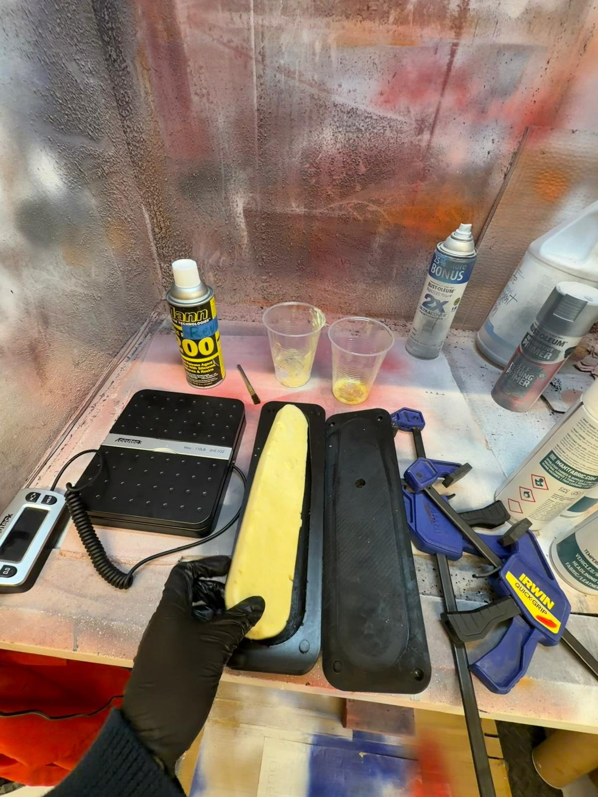
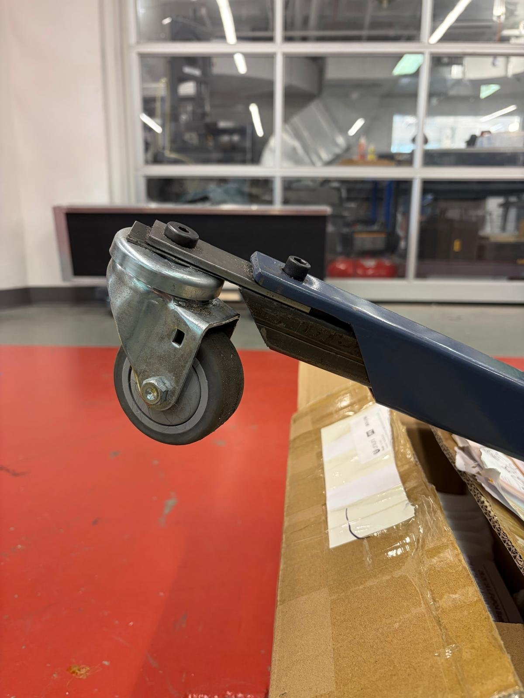
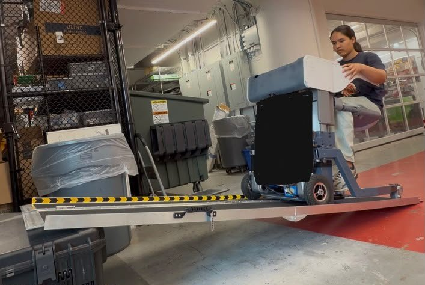

ReviMo
Advancing the mechanical design of the assistive robot ReviMo Niko toward production.
Overview
ReviMo Niko is an independent transfer device for elderly and paralyzed people, giving them back their autonomy in everyday life. From May to August 2026 I was a Hardware Robotics Intern at ReviMo in Boston, MA, helping get Niko's mechanical design ready for production and optimized for manufacturing.
My role
I worked closely with ReviMo's CEO, but mostly independently, with my own tasks day to day: lightweighting parts, improving them for manufacturing, finding easier ways to make certain parts in-house, running tests, and testing and speccing motors and actuators. I worked from the specs and could choose how to approach each task. I sometimes worked with the electrical intern on circuit design. I designed in Fusion 360, ran FEA, machined on the Amtrak CNC, printed on Bambu Lab printers, and programmed an Arduino UNO.
What I did
I redesigned 16 parts in Autodesk Fusion for strength, manufacturability, and 3D printing, cutting part mass by up to 36% and print time by 40%. For example, I redesigned the backrest to reduce its print time: I ran FEA to find the regions most critical to the design, kept those at high infill, and lowered the infill everywhere else, while making sure the backrest still kept its shape after many cycles on the test rig. I also designed a custom wheel for manufacturing, based on the specifications I was given.
One part I worked on was Niko's two-part scooping seat. I iterated it using different infills for comfort and different filament types, including various TPUs and PPA-CF.

I also optimized the armrest's design and print settings for print time, comfort, and finish, testing infill percentage, wall count, flow, and nozzle temperature.

The surface finish of printed TPU armrests wasn't great, so as an alternative I made a foam armrest by casting polyurethane in a 3D-printed mold.

To validate the designs, I built automated stress and fatigue test rigs with custom control and data-logging electronics, cutting testing time by 70%. During high-speed testing I caught the TPU backrest deforming at ~900 cycles; the redesigned backrest, with high infill kept only in the regions the FEA showed were critical, lasted thousands of cycles.
One rig tested backrests: it ran duty cycle tests to measure how backrests printed in different materials and infills deform over time.

I bench-tested 5 motors and actuators on torque, efficiency, noise, and heat to select the best fit for each application. I also tuned 3D print settings, materials, and casting molds to validate production processes, cutting production time by 85%.
I also made adjustable back leg extension parts out of steel, using the bandsaw, grinder, and drill press. I then tested different extension lengths at different incline angles, with 3 different front motors and with weights on the device, to find the setup that performed best, with the least slipping. A 2.5 in extension was the most practical for the design, and worked reasonably well on ramps up to 11° with 85 kg on the device.


Results
- 16 parts redesigned: up to 36% lighter and 40% faster to print
- Testing time cut by 70% with automated stress and fatigue rigs
- TPU backrest that deformed at ~900 cycles redesigned to last thousands of cycles
- Production time cut by 85% through tuned print settings, materials, and casting molds
What I learned
I learned Fusion 360 CAD, FEA, weight-reduction analysis, and part geometry optimization. I learned a lot about 3D printing: variable infills, different filament types, and how they behave under different printer settings and filament moisture levels. I also learned other manufacturing techniques, like casting foam, and a lot about design for assembly and assembly technique, since I rebuilt every mechanism of the device from scratch at least once.